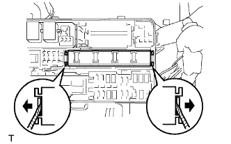
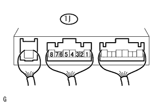

RƠLE TỔ HỢP > KIỂM TRA TRÊN XE |
| 1. NGẮT CÁP ÂM RA KHỎI CỰC ÂM ẮC QUY |
| 2. THÁO NẮP HỘP RƠLE KHOANG ĐỘNG CƠ |
| 3. KIỂM TRA RƠ LE TỔ HỢP |
|  |
Dùng tô vít, tách 2 khóa cài và ngắt rơle tổ hợp ra khỏi hộp đầu nối khoang động cơ.
|  |
Đo điện áp của rơle MAIN.
| Nối dụng cụ đo | Điều kiện | Điều kiện tiêu chuẩn |
| 1J-4 - Mát thân xe | Khoá điện ON | 10 đến 14 V |
Đo điện áp của rơle C/OPN.
| Nối dụng cụ đo | Điều kiện | Điều kiện tiêu chuẩn |
| 1J-4 - Mát thân xe | Khoá điện ON | 10 đến 14 V |
| 4. LẮP NẮP HỘP RƠLE KHOANG ĐỘNG CƠ |
| 5. NỐI CÁP VÀO CỰC ÂM ẮC QUY |
| 6. TIẾN HÀNH THIẾT LẬP BAN ĐẦU |
Tiến hành thiết lập ban đầu (Xem trang Kích chuột vào đây).